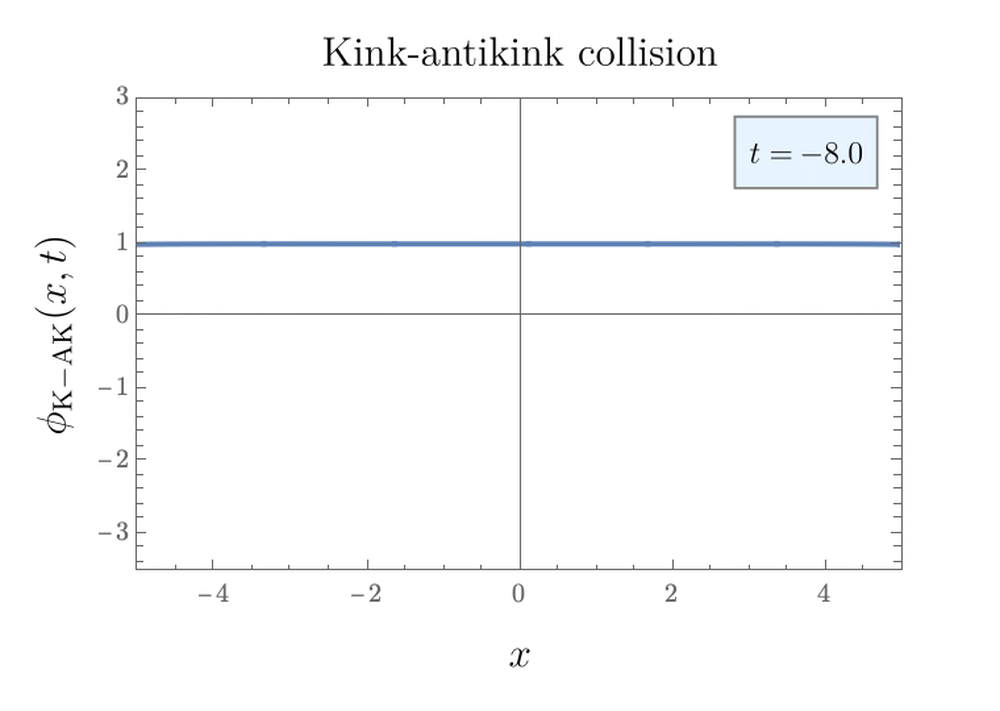

Solitons are ubiquitous phenomena, appearing in sciences ranging from neuroscience to magnetism to oceanography.
This is a short exposition of solitons in 1 spatial and 1 time dimension. Below you will find animations pertaining to the Korteweg-de Vries
equation and kink solutions in \(\small\phi^4\) and sine-Gordon classical scalar field potentials. Our explanation walks the reader through
some basic notions relating to wave equations, and then attacks each of the sections below.
Adopting the notation \( u_x=\partial u/\partial x\), the simplest wave equation is
$$u_{tt}-c^2u_{xx}=0$$
for some wave amplitude \(u(x,t)\). Physical systems often introduce specific constraints on \(u(x,t)\) in addition to the wave equation.
One might consider systems whose solutions present dispersion and nonlinearity, such that
$$u_t-6uu_x+u_{xxx}=0.$$
The solitary wave solution to the above equation was found by Korteweg and de Vries in 1895, and has the general form
$$\zeta(x,t)=a\text{sech}^2\Big\{\frac{1}{2}\sqrt{\frac{3a}{h^3}}( x-ct)\Big\}$$
for waves with crest height \(a\) in water with height \(h\).
The phase velocity \(c\) is given by Russell's empirical formula in the limit of relatively small waves (\(a\ll h\)) on Earth's surface,
$$c=\sqrt{gh}(1+\frac{1}{2}\frac{a}{h}).$$
We see clearly that taller solitary waves or solitons, with greater crest amplitude \(a\), propagate faster since \(c\propto a\).
Kink soliton in \(\scriptsize\phi^4\) potential
Kink solitons in a \(\scriptsize\phi^4\) potential
The Lagrangian of a single scalar field \(\phi(x,t)\) is of the form
$$\mathcal{L} = \frac{1}{2}\partial_{\mu}\phi\partial^{\mu}\phi - U(\phi).$$
The equation of motion obtained from this Lagrangian is the non-linear Klein-Gordon equation
$$\partial_{\mu}\partial^{\mu}\phi + \frac{dU}{d\phi}=0.$$
Consider the \(\phi^4\) potential given by \(U(\phi)=(1-\phi^2)^2\).
For static solutions, i.e. \(\partial_t\phi=0\), one can show that the field equation admits a kink soliton solution, connecting two vacua,
$$\phi(x)=\tanh(x+a).$$
Boosting with velocity \(v\ll 1\) in units of \(c\), the time-dependent solution is of the form
$$\phi(x,t)=\tanh(x-a(t)),$$
where the axis intercept \(a(t)=vt+\text{const}\) now moves in time, as animated above. One can consider kink-antikink solutions where
the two solitons are well separated, such that
$$\phi_\text{K-AK}(x,t)\approx\tanh(x+a)-\tanh(x-a)-1.$$

Kink soliton in sine-Gordon potential
Kink solitons in a sine-Gordon potential
Consider a classical scalar field \(\phi(x)\) in a potential
$$U(\phi) = 1 - \cos\phi,$$
which reaches 0 at \(\phi=2n\pi\) for integer \(n\).
The Lagrangian for this scalar field becomes
$$\mathcal{L} = \frac{1}{2}\partial_{\mu}\phi\partial^{\mu}\phi - 1 + \cos\phi,$$
yielding the sine-Gordon equation. (A clever play on words, as the equations of motion from the Lagrangian
are the Klein-Gordon equation but with the mass term switched for a sine.)
The static kink solution to the sine-Gordone equation comes from considering the Bogolmony equation, and has the form
$$\phi_\text{SG}(x) = 4\tan^{-1}(e^{x-a}).$$
This solution takes values in the range \([0,2\pi]\), and so connects the first two vacua. Since the sine-Gordon equation is integrable,
dynamical multi-kink solutions can be derived exactly. For example, it can be shown that there is a two-kink solution
$$\phi_\text{SS}(x,t) = 4\tan^{-1}\left(\frac{v\sinh(\gamma x)}{\cosh(\gamma t)}\right),$$
or a kink-antikink/soliton-antisoliton solution of a similar form
$$\phi_\text{SA}(x,t) = 4\tan^{-1}\left(\frac{\sinh(\gamma vt)}{v\cosh(\gamma x)}\right),$$
where \(\gamma=\sqrt{1-v^2}\). Since \(\phi_\text{SS}(x,t)=\phi_\text{SS}(x,-t)\), this solution corresponds to two solitons
initially moving towards each other, each with speed \(v\), and then subsequently bouncing off each other and moving apart.
This indicates that two kinks repel each other, in contrast to the attraction we previously observed between kinks and anti-kinks in both
\(\phi^4\) and sine-Gordon theory.
Another solution to the sine-Gordon field equation is the so-called breather or doublet solution
$$\phi_v(x,t)=4\tan^{-1}\left(\frac{\sin(vt/\sqrt{1+v^2})}{v\cosh(x/\sqrt{1+v^2})}\right),$$
which is like the kink-antikink/soliton-antisoliton solution \(\phi_\text{SA}\) with the change \(v\to iv\). The field remains inside an envelope
$$\phi_{v,\text{max}}(x,t)=\pm 4\tan^{-1}\left(\text{sech}(x/\sqrt{1+v^2})/v\right),$$
oscillating with period \(\tau=2\pi\sqrt{1+v^{-2}}\), and corresponding to a bound state of the soliton-antisoliton solution. It makes sense that there
would be a bound state for such collisions, since kinks and antikinks attract each other.